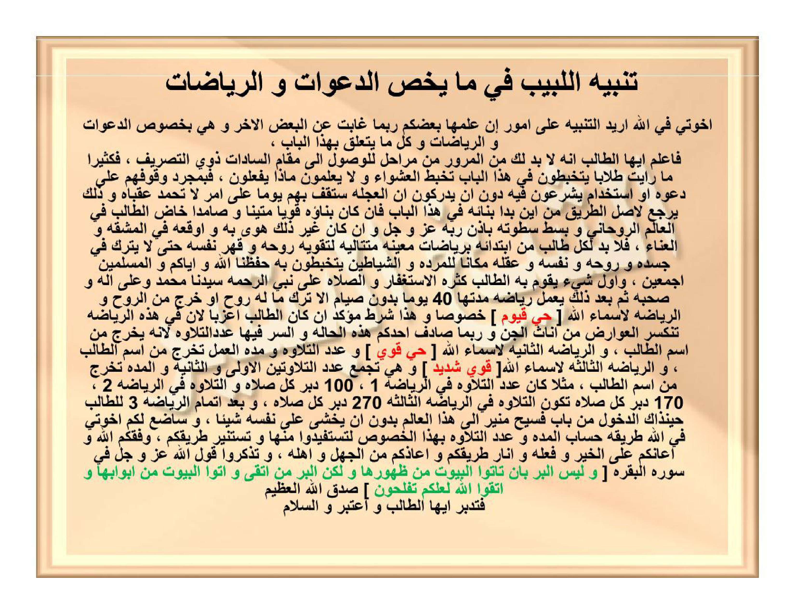

HALAMAN 34 — TANBĪHUL-LABĪBI FĪ MĀ YAKHUSHSHUD-DA'AWĀTI WAR-RIYĀDHĀTI — تَنْبِيهُ اللَّبِيبِ فِي مَا يَخُصُّ الدَّعَوَاتِ وَالرِّيَاضَاتِ
arab
تَنْبِيهُ اللَّبِيبِ فِي مَا يَخُصُّ الدَّعَوَاتِ وَالرِّيَاضَاتِ
إِخْوَتِي فِي اللهِ أُرِيدُ التَّنْبِيهَ عَلَى أُمُورٍ إِنْ عَلِمَهَا بَعْضُكُمْ رُبَّمَا غَابَتْ عَنِ الْبَعْضِ الْآخَرِ وَهِيَ بِخُصُوصِ الدَّعَوَاتِ وَالرِّيَاضَاتِ وَكُلِّ مَا يَتَعَلَّقُ بِهَذَا الْبَابِ ،
فَاعْلَمْ أَيُّهَا الطَّالِبُ أَنَّهُ لَا بُدَّ لَكَ مِنَ الْمُرُورِ مِنْ مَرَاحِلَ لِلْوُصُولِ إِلَى مَقَامِ السَّادَاتِ ذَوِي التَّصْرِيفِ ، فَكَثِيرًا مَا رَأَيْتُ طُلَّابًا يَتَخَبَّطُونَ فِي هَذَا الْبَابِ تَخَبُّطَ الْعَشْوَاءِ وَلَا يَعْلَمُونَ مَاذَا يَفْعَلُونَ ، فَبِمُجَرَّدِ وُقُوفِهِمْ عَلَى دَعْوَةٍ أَوِ اسْتِخْدَامٍ يَشْرَعُونَ فِيهِ دُونَ أَنْ يُدْرِكُوا أَنَّ الْعَجَلَةَ سَتَقِفُ بِهِمْ يَوْمًا عَلَى أَمْرٍ لَا تُحْمَدُ عُقْبَاهُ وَذَلِكَ يَرْجِعُ لِأَصْلِ الطَّرِيقِ مِنْ أَيْنَ بَدَأَ بِنَاؤُهُ فِي هَذَا الْبَابِ فَإِنْ كَانَ بِنَاؤُهُ قَوِيًّا مَتِينًا وَصَامِدًا خَاضَ الطَّالِبُ فِي الْعَالَمِ الرُّوحَانِيِّ وَبَسَطَ سَطْوَتَهُ بِإِذْنِ رَبِّهِ عَزَّ وَجَلَّ وَإِنْ كَانَ غَيْرَ ذَلِكَ هَوَى بِهِ وَأَوْقَعَهُ فِي الْمَشَقَّةِ وَالْعَنَاءِ ، فَلَا بُدَّ لِكُلِّ طَالِبٍ مِنِ ابْتِدَائِهِ بِرِيَاضَاتٍ مُعَيَّنَةٍ مُتَتَالِيَةٍ لِتَقْوِيَةِ رُوحِهِ وَقَهْرِ نَفْسِهِ حَتَّى لَا يَتْرُكَ فِي جَسَدِهِ وَرُوحِهِ وَنَفْسِهِ وَعَقْلِهِ مَكَانًا لِلْمَرَدَةِ وَالشَّيَاطِينِ يَتَخَبَّطُونَ بِهِ حَفِظَنَا اللهُ وَإِيَّاكُمْ وَالْمُسْلِمِينَ أَجْمَعِينَ ، وَأَوَّلُ شَيْءٍ يَقُومُ بِهِ الطَّالِبُ كَثْرَةُ الِاسْتِغْفَارِ وَالصَّلَاةُ عَلَى نَبِيِّ الرَّحْمَةِ سَيِّدِنَا مُحَمَّدٍ وَعَلَى آلِهِ وَصَحْبِهِ ثُمَّ بَعْدَ ذَلِكَ يَعْمَلُ رِيَاضَةً مُدَّتُهَا ٤٠ يَوْمًا بِدُونِ صِيَامٍ إِلَّا تَرْكَ مَا لَهُ رُوحٌ أَوْ خَرَجَ مِنَ الرُّوحِ وَالرِّيَاضَةُ لِأَسْمَاءِ اللهِ [ حَيٌّ قَيُّومٌ ] خُصُوصًا وَهَذَا شَرْطٌ مُؤَكَّدٌ إِنْ كَانَ الطَّالِبُ أَعْزَبًا لِأَنَّ فِي هَذِهِ الرِّيَاضَةِ تَنْكَسِرُ الْعَوَارِضُ مِنْ إِنَاثِ الْجِنِّ وَرُبَّمَا صَادَفَ أَحَدُكُمْ هَذِهِ الْحَالَةَ وَالسِّرُّ فِيهَا عَدَدُ التِّلَاوَةِ لِأَنَّهُ يَخْرُجُ مِنِ اسْمِ الطَّالِبِ ، وَالرِّيَاضَةُ الثَّانِيَةُ لِأَسْمَاءِ اللهِ [ حَيٌّ قَوِيٌّ ] وَعَدَدُ التِّلَاوَةِ وَمُدَّةُ الْعَمَلِ تَخْرُجُ مِنِ اسْمِ الطَّالِبِ ، وَالرِّيَاضَةُ الثَّالِثَةُ لِأَسْمَاءِ اللهِ [ قَوِيٌّ شَدِيدٌ ] وَهِيَ تَجْمَعُ عَدَدَ التِّلَاوَتَيْنِ الْأُولَى وَالثَّانِيَةِ وَالْمُدَّةُ تَخْرُجُ مِنِ اسْمِ الطَّالِبِ ، مَثَلًا كَانَ عَدَدُ التِّلَاوَةِ فِي الرِّيَاضَةِ ١ ، ١٠٠ دُبُرَ كُلِّ صَلَاةٍ وَالتِّلَاوَةُ فِي الرِّيَاضَةِ ٢ ، ١٧٠ دُبُرَ كُلِّ صَلَاةٍ تَكُونُ التِّلَاوَةُ فِي الرِّيَاضَةِ الثَّالِثَةِ ٢٧٠ دُبُرَ كُلِّ صَلَاةٍ ، وَبَعْدَ إِتْمَامِ الرِّيَاضَةِ ٣ لِلطَّالِبِ حِينَذَاكَ الدُّخُولُ مِنْ بَابٍ فَسِيحٍ مُنِيرٍ إِلَى هَذَا الْعَالَمِ بِدُونِ أَنْ يَخْشَى عَلَى نَفْسِهِ شَيْئًا ، وَسَأَضَعُ لَكُمْ إِخْوَتِي فِي اللهِ طَرِيقَةَ حِسَابِ الْمُدَّةِ وَعَدَدِ التِّلَاوَةِ بِهَذَا الْخُصُوصِ لِتَسْتَفِيدُوا مِنْهَا وَتَسْتَنِيرَ طَرِيقُكُمْ ، وَفَّقَكُمُ اللهُ وَأَعَانَكُمْ عَلَى الْخَيْرِ وَفِعْلِهِ وَأَنَارَ طَرِيقَكُمْ وَأَعَاذَكُمْ مِنَ الْجَهْلِ وَأَهْلِهِ ، وَتَذَكَّرُوا قَوْلَ اللهِ عَزَّ وَجَلَّ فِي سُورَةِ الْبَقَرَةِ [ وَلَيْسَ الْبِرُّ بِأَنْ تَأْتُوا الْبُيُوتَ مِنْ ظُهُورِهَا وَلَكِنَّ الْبِرَّ مَنِ اتَّقَى وَأْتُوا الْبُيُوتَ مِنْ أَبْوَابِهَا وَاتَّقُوا اللهَ لَعَلَّكُمْ تُفْلِحُونَ ] صَدَقَ اللهُ الْعَظِيمُ
فَتَدَبَّرْ أَيُّهَا الطَّالِبُ وَاعْتَبِرْ وَالسَّلَامُ
latin
Tanbīhul-labībi fī mā yakhushshud-da'awāti war-riyādhāti.
Ikhwatī fillāhi urīdut-tanbīha 'alā umūrin in 'alimahā ba'dhukum rubbamā ghābat 'anil-ba'dhil-ākhari wa hiya bikhushūshid-da'awāti war-riyādhāti wa kulli mā yata'allaqu bihādzal-bābi,
Fa'lam ayyuhath-thālibu annahū lā budda laka minal-murūri min marāhila lil-wushūli ilā maqāmis-sādāti dzawit-tashrīfi, fakatsīran mā ra'aitu thullāban yatakhabbathūna fī hādzal-bābi takhabbuthal-'asywā'i wa lā ya'lamūna mādzā yaf'alūna, fabimujarradi wuqūfihim 'alā da'watin awi-stikhdāmin yasyra'ūna fīhi dūna an yudrikū annal-'ajalata sataqifu bihim yauman 'alā amrin lā tuhmadu 'uqbāhu wa dzālika yarji'u li-ashlith-tharīqi min aina bada'a binā'uhū fī hādzal-bābi fa-in kāna binā'uhū qawiyyan matīnan wa shāmidan khādhath-thālibu fil-'ālamir-rūhāniyyi wa basatha sathwatahū bi-idzni rabbihī 'azza wa jalla wa in kāna ghaira dzālika hawā bihī wa auqa'ahū fil-masyaqqati wal-'anā'i, falā budda likulli thālibin mini-btidā'ihī biriyādhātin mu'ayyanatin mutatāliyatin litaqwiyati rūhihī wa qahri nafsihī hattā lā yatruka fī jasadihī wa rūhihī wa nafsihī wa 'aqlihī makānan lil-maradati wasy-syayāthīni yatakhabbathūna bihī hafizhanallāhu wa iyyākum wal-muslimīna ajma'īna, wa awwalu syai'in yaqūmu bihith-thālibu katsratul-istighfāri wash-shalātu 'alā nabiyyir-rahmati sayyidinā Muhammadin wa 'alā ālihī wa shahbihī tsumma ba'da dzālika ya'malu riyādhatan muddatuhā 40 yauman bidūni shiyāmin illā tarka mā lahū rūhun au kharaja minar-rūhi war-riyādhatu li-asmā'illāhi [ Hayyun Qayyūmun ] khushūshan wa hādzā syarthun mu'akkadun in kānath-thālibu a'zaban li-anna fī hādzihir-riyādhati tankasirul-'awāridhu min inātsil-jinni wa rubbamā shādafa ahadukum hādzihil-hālata was-sirru fīhā 'adadut-tilāwati li-annahū yakhruju minismith-thālibi, war-riyādhatuts-tsāniyatu li-asmā'illāhi [ Hayyun Qawiyyun ] wa 'adadut-tilāwati wa muddatul-'amali takhruju minismith-thālibi, war-riyādhatuts-tsālitsatu li-asmā'illāhi [ Qawiyyun Syadīdun ] wa hiya tajma'u 'adadat-tilāwatainil-ūlā wats-tsāniyati wal-muddatu takhruju minismith-thālibi, matsalan kāna 'adadut-tilāwati fir-riyādhati 1, 100 dubura kulli shalātin wat-tilāwatu fir-riyādhati 2, 170 dubura kulli shalātin takūnut-tilāwatu fir-riyādhatits-tsālitsati 270 dubura kulli shalātin, wa ba'da itmāmir-riyādhati 3 lith-thālibi hīnadzākad-dukhūlu min bābin fasīhin munīrin ilā hādzal-'ālami bidūni an yakhsyā 'alā nafsihī syai'an, wa sa-adha'u lakum ikhwatī fillāhi tharīqata hisābil-muddati wa 'adadit-tilāwati bihādzal-khushūshi litastafīdū minhā wa tastanīra tharīqukum, waffaqakumullāhu wa a'ānakum 'alal-khairi wa fi'lihī wa anāra tharīqakum wa a'ādzakum minal-jahli wa ahlihī, wa tadzakkarū qaulallāhi 'azza wa jalla fī sūratil-Baqarati [ Wa laisal-birru bi-an ta'tul-buyūta min zhuhūrihā wa lākinnal-birra manittaqā wa'tul-buyūta min abwābihā wattaqullāha la'allakum tuflihūna ] shadaqallāhul-'azhīmu.
Fatadabbar ayyuhath-thālibu wa'tabir was-salāmu.
Terjemahan
Peringatan bagi orang yang berakal cerdas mengenai hal-hal yang berkaitan dengan doa-doa dan riyadhah-riyadhah.
Wahai saudara-saudaraku karena Allah, aku ingin mengingatkan tentang beberapa perkara yang jika sebagian dari kalian telah mengetahuinya, boleh jadi perkara itu luput dari sebagian yang lain; yaitu khususnya mengenai doa-doa dan riyadhah-riyadhah serta segala hal yang berkaitan dengan bab ini.
Maka ketahuilah wahai penuntut ilmu, bahwa engkau harus melewati tahapan-tahapan untuk sampai ke maqam para pemimpin pemilik daya guna (tashrīf). Sungguh sering kali aku melihat para penuntut ilmu berjalan membabi buta dalam bab ini bagaikan unta rabun di malam gelap dan mereka tidak mengetahui apa yang sedang mereka perbuat; begitu mereka menemukan suatu doa (da'wah) atau amalan penundukan khadim (istikhdām), mereka langsung memulainya tanpa menyadari bahwa ketergesa-gesaan itu suatu hari akan menghentikan mereka pada perkara yang akibatnya tidak terpuji. Hal itu kembali pada pokok jalannya: dari mana ia memulai fondasi bangunannya dalam bab ini. Apabila fondasi bangunannya kuat, kokoh, dan teguh, niscaya sang penuntut ilmu dapat menyelami alam ruhani dan membentangkan wibawanya dengan izin Tuhannya 'azza wa jalla; namun apabila tidak demikian, niscaya bangunan itu runtuh menimpanya dan menjerumuskannya ke dalam kesulitan serta kepayahan. Oleh karena itu, setiap penuntut ilmu harus memulai dengan riyadhah-riyadhah tertentu secara berurutan untuk menguatkan ruhnya dan menundukkan hawa nafsunya, sehingga ia tidak menyisakan di dalam jasad, ruh, jiwa, dan akalnya satu tempat pun bagi jin-jin durhaka (maradah) dan setan-setan untuk mempermainkannya — semoga Allah menjaga kami, kalian, dan seluruh kaum muslimin. Dan hal pertama yang wajib dilakukan oleh penuntut ilmu adalah memperbanyak istighfar dan shalawat atas Nabi pembawa rahmat, junjungan kita Muhammad beserta keluarga dan para sahabatnya. Kemudian setelah itu ia mengerjakan riyadhah yang lamanya 40 hari tanpa berpuasa, kecuali meninggalkan memakan segala yang bernyawa atau yang keluar dari makhluk bernyawa; dan riyadhah tersebut adalah membaca Asma Allah [ Hayyun Qayyūmun ] secara khusus. Ini adalah syarat yang sangat ditekankan apabila sang penuntut ilmu masih bujangan (belum menikah), karena di dalam riyadhah ini akan hancur segala gangguan ('awāridh) dari kalangan jin betina, dan boleh jadi salah seorang di antara kalian pernah mengalami kondisi tersebut; adapun rahasia di dalamnya terletak pada jumlah bacaannya karena jumlah itu dikeluarkan dari perhitungan nama sang penuntut ilmu. Kemudian riyadhah kedua adalah membaca Asma Allah [ Hayyun Qawiyyun ], sedangkan jumlah bacaan dan lama hari pengamalannya dikeluarkan dari nama sang penuntut ilmu. Dan riyadhah ketiga adalah membaca Asma Allah [ Qawiyyun Syadīdun ], yang menggabungkan jumlah bacaan riyadhah pertama dan kedua, sedangkan lama harinya dikeluarkan dari nama sang penuntut ilmu; sebagai contoh: apabila jumlah bacaan pada riyadhah pertama adalah 100 kali setiap selesai shalat fardhu, dan bacaan pada riyadhah kedua adalah 170 kali setiap selesai shalat fardhu, maka jumlah bacaan pada riyadhah ketiga menjadi 270 kali setiap selesai shalat fardhu. Dan setelah menyempurnakan riyadhah ketiga ini, barulah saat itu sang penuntut ilmu dapat masuk melalui pintu yang lapang lagi bercahaya menuju alam ini tanpa perlu merasa takut sedikit pun atas dirinya. Dan aku akan meletakkan untuk kalian, wahai saudara-saudaraku karena Allah, tata cara menghitung lama hari dan jumlah bacaan khusus dalam hal ini agar kalian dapat mengambil manfaat darinya dan jalan kalian menjadi terang. Semoga Allah memberi taufik kepada kalian, menolong kalian atas kebaikan dan pengamalannya, menerangi jalan kalian, serta melindungi kalian dari kebodohan dan para pengikutnya. Dan ingatlah firman Allah 'azza wa jalla dalam Surah al-Baqarah: [ Dan bukanlah kebajikan memasuki rumah-rumah dari bagian belakangnya, akan tetapi kebajikan itu ialah kebajikan orang yang bertakwa; dan masukilah rumah-rumah itu dari pintu-pintunya, serta bertakwalah kepada Allah agar kalian beruntung — QS. al-Baqarah: 189 ]. Maha Benar Allah Yang Maha Agung.
Maka renungkanlah wahai penuntut ilmu dan ambillah pelajaran, wassalam.
Syarah dan Penjelasan
1. **Verifikasi 3× vs `hal_34.png` — Pengembalian 4 Bagian Penting yang Hilang pada Draf**:
- Dalam draf kiriman sebelumnya, terdapat 4 bagian kalimat asli kitab yang terpotong/hilang sama sekali pada teks Arab, Latin, maupun Terjemahan, dan kini telah dikembalikan **100% utuh**:
1) Doa penjagaan: `حَفِظَنَا اللهُ وَإِيَّاكُمْ وَالْمُسْلِمِينَ أَجْمَعِينَ` (*semoga Allah menjaga kami, kalian, dan seluruh kaum muslimin*).
2) Penjelasan rahasia hitungan Riyadhah Pertama: `وَرُبَّمَا صَادَفَ أَحَدُكُمْ هَذِهِ الْحَالَةَ وَالسِّرُّ فِيهَا عَدَدُ التِّلَاوَةِ لِأَنَّهُ يَخْرُجُ مِنِ اسْمِ الطَّالِبِ` (*dan boleh jadi salah seorang di antara kalian pernah mengalami kondisi tersebut; adapun rahasia di dalamnya terletak pada jumlah bacaannya karena jumlah itu dikeluarkan dari nama sang penuntut ilmu*).
3) Contoh konkret penjumlahan wirid Riyadhah Ketiga: `مَثَلًا كَانَ عَدَدُ التِّلَاوَةِ فِي الرِّيَاضَةِ ١ ، ١٠٠ دُبُرَ كُلِّ صَلَاةٍ وَالتِّلَاوَةُ فِي الرِّيَاضَةِ ٢ ، ١٧٠ دُبُرَ كُلِّ صَلَاةٍ تَكُونُ التِّلَاوَةُ فِي الرِّيَاضَةِ الثَّالِثَةِ ٢٧٠ دُبُرَ كُلِّ صَلَاةٍ` (*sebagai contoh: apabila jumlah bacaan pada riyadhah 1 adalah 100 setiap selesai shalat, dan bacaan pada riyadhah 2 adalah 170 setiap selesai shalat, maka bacaan pada riyadhah ke-3 adalah 270 setiap selesai shalat*).
4) Janji pengarang & doa penutup: `وَسَأَضَعُ لَكُمْ إِخْوَتِي فِي اللهِ طَرِيقَةَ حِسَابِ الْمُدَّةِ وَعَدَدِ التِّلَاوَةِ بِهَذَا الْخُصُوصِ لِتَسْتَفِيدُوا مِنْهَا وَتَسْتَنِيرَ طَرِيقُكُمْ ، وَفَّقَكُمُ اللهُ وَأَعَانَكُمْ عَلَى الْخَيْرِ وَفِعْلِهِ وَأَنَارَ طَرِيقَكُمْ وَأَعَاذَكُمْ مِنَ الْجَهْلِ وَأَهْلِهِ` beserta lanjutan ayat `وَاتَّقُوا اللهَ لَعَلَّكُمْ تُفْلِحُونَ ] صَدَقَ اللهُ الْعَظِيمُ`.
- Selain itu kata sisipan `(الْتَرْكُ الرُّوحِيُّ)` yang tidak ada pada scan asli telah dihapus dari bagian `arab` dan `latin`.
2. **Kurikulum Tiga Jenjang Riyadhah Pembentukan Ruh (*Taqwiyatul-Arwāh*)**:
- Syeikh al-Basyir memaparkan kurikulum wajib 3 tahap sebelum seorang murid mengamalkan *Da'wah* atau *Istikhdām*:
- **Tahap 1 (`حَيٌّ قَيُّومٌ` — 40 Hari)**: Menghidupkan kesadaran ruh (*Hayyun*) dan kemandirian batin (*Qayyūmun*) disertai *tarku mā lahū rūh* (pantang memakan daging/produk hewani tanpa harus berpuasa di siang hari) guna memutus ikatan syahwat jasmani serta menghancurkan gangguan jin betina (*'awāridh min inātsil-jinn*), terutama bagi penuntut ilmu yang belum menikah (*a'zab*).
- **Tahap 2 (`حَيٌّ قَوِيٌّ`)**: Memadukan kehidupan ruh (*Hayyun*) dengan kekuatan batin (*Qawiyyun*); jumlah bacaan (*'adadut-tilāwah*) dan lama harinya (*muddatul-'amal*) dihitung berdasarkan hisab nama murid.
- **Tahap 3 (`قَوِيٌّ شَدِيدٌ`)**: Memadukan kekuatan (*Qawiyyun*) dan keteguhan daya tahan (*Syadīdun*); jumlah bacaannya setiap selesai shalat lima waktu adalah hasil penjumlahan wirid Tahap 1 + Tahap 2 (contoh: `100 + 170 = 270` kali setiap *dubura kulli shalāh*).
Khususiyah dan Tatacara Praktik
1. **Pembersihan Pendahuluan**: Sebelum memasuki Riyadhah 40 hari pertama, murid wajib terlebih dahulu membiasakan diri memperbanyak istighfar dan shalawat atas Nabi Muhammad ﷺ.
2. **Aturan Pantang Bernyawa Tanpa Puasa (`Bidūni Shiyāmin illā Tarka Mā Lahū Rūh`)**: Pada riyadhah pertama selama 40 hari, pengamal tetap diperbolehkan makan dan minum di siang hari (tidak wajib puasa menahan lapar/haus), namun wajib menghindari segala makanan yang berasal dari makhluk bernyawa (daging merah, unggas, ikan) maupun yang keluar darinya (telur, susu, keju, lemak hewani), dan mencukupkan diri dengan tumbuh-tumbuhan/biji-bijian.
3. **Kedisiplinan Waktu Wirid (`Dubura Kulli Shalāh`)**: Seluruh jumlah wirid yang diperoleh dari hisab nama murid dibaca secara istiqamah setiap selesai shalat fardhu lima waktu tanpa terputus.

[Scan Lengkap: HALAMAN 34 — TANBĪHUL-LABĪBI FĪ MĀ YAKHUSHSHUD-DA'AWĀTI WAR-RIYĀDHĀTI — تَنْبِيهُ اللَّبِيبِ فِي مَا يَخُصُّ الدَّعَوَاتِ وَالرِّيَاضَاتِ]